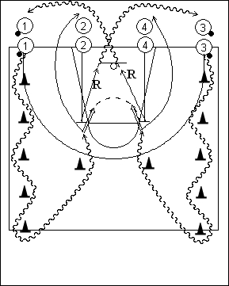

Catégorie : DRIBBLE (Dr-004)
Déroulement
- Les joueurs sont sur quatre files à une baseline. Les deux premiers joueurs des files 1 et 3 possèdent un ballon.
- Le premier joueur de la file 1 effectue en dribble le circuit indiqué et réalise un changement de direction derrière le dernier cône avant de prendre son jump shoot devant le premier joueur de la file 2 qui a réalisé le close out. Le premier joueur de la file 3 est parti en même temps que le premier joueur de la file 1 et a effectué la même chose que celui-ci en shootant devant le premier joueur de la file 4.
- 1 va dans la file 2 (face à son emplacement de shoot). Idem pour 3 qui va en 4. 2 réalise le rebond du shoot de 1 et va en dribble dans la file 3. 4 prend le rebond du shoot de 3 et va en dribble dans la file 1.
Coaching points
- Insister pour que les dribbleurs partent en même temps et réalisent des dribbles très rapides autour des premiers cônes.
- Demander des changements de direction différents derrière le dernier cône avant le shoot.